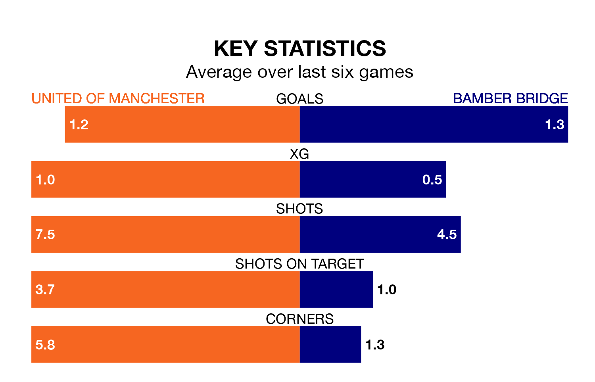

Bamber Bridge make the journey to Broadhurst Park to play United of Manchester on Saturday looking to pick up points to end their five-game losing streak.
Bamber Bridge's struggles have left them with just three points from their last six Northern Premier League matches, while their opponents have earned six from a possible 18.
In the last 10 years, United of Manchester and Bamber Bridge have played each other on seven occasions. United of Manchester won three of them, Bamber Bridge two, and they drew twice.
On average, F.C. United scored 1.6 goals and Bamber Bridge 1.4 in those matches.
Their last meeting was on November 21, when they played out a 3-3 draw.
Bamber Bridge are 17th in the table after 35 games, of which they have won nine and drawn 11, earning 38 points.
United of Manchester are two places ahead of the visitors in 15th, with 13 wins and four draws putting them on 43 points.
With 49 goals in 36 games so far this season, F.C. United are scoring at below the league average rate with 1.4 goals per game. And they are conceding more than average, letting in 70 goals at a rate of 1.9 per game.
Bamber Bridge, meanwhile, are average scorers, with 1.6 goals per game. They have conceded 2.0 goals per game.
United of Manchester's last match was on April 6, a 2-1 loss against Hyde United.
Bamber Bridge lost 3-1 against Ashton United last time out, also on April 6.
Updated: 10:01 (UTC), 12/04/24